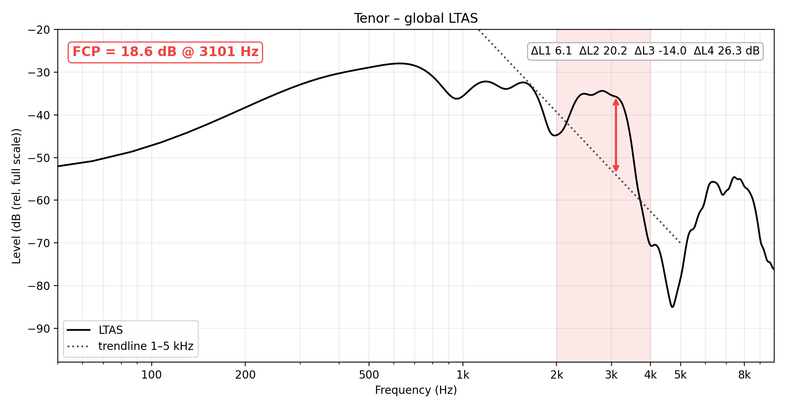
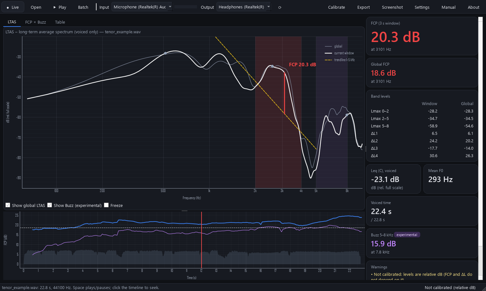
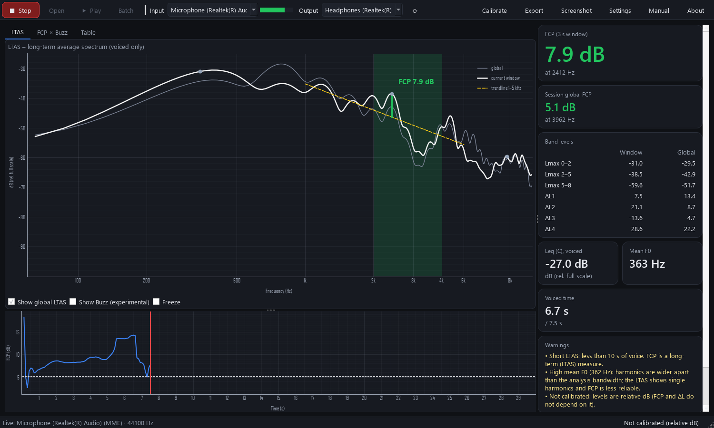

Tiago Lima Bicalho Cruz · version 2.0.0 · November 2026
FCP Live Analyzer measures, live or from files, the Formant Cluster Prominence (FCP): how much the clustering of resonances R3–R5 (the "singer's formant") stands out in the long-term average spectrum (LTAS) of the voice. It follows the definition of Lã, Silva and Granqvist (2023) and also reports the band measures of the same paper (Lmax and ΔL1–ΔL4).

| Measure | Definition (Lã et al., 2023) |
|---|---|
| LTAS | Long-term average spectrum of the voiced segments only. Hanning window, 350 Hz bandwidth, power average. |
| Trendline | Line fitted to the LTAS between 1 and 5 kHz, linear in log frequency (straight on a logarithmic axis, as in the paper's figures). |
| FCP | Largest difference between the LTAS and the trendline inside 2–4 kHz. The frequency where it occurs is also reported. |
| Lmax(0–2), Lmax(2–5), Lmax(5–8) | Maximum LTAS level in each band (kHz). |
| ΔL1 | Lmax(0–2) − Lmax(2–5) (Hammarberg index) |
| ΔL2 | Lmax(2–5) − Lmax(5–8) |
| ΔL3 | ΔL1 − ΔL2 |
| ΔL4 | Lmax(0–2) − Lmax(5–8) |
| Leq (C) | C-weighted equivalent level of the voice. In dB SPL when the system is calibrated. |
| Buzz (experimental) | The author's own measure, not validated in the literature: 90th percentile of the LTAS in the Buzz band (5–8 kHz by default) minus the trendline evaluated at 5 kHz. |
Published reference values (Lã et al., 2023): reading aloud ≈ 4–5 dB; sung Fado-Canção ≈ 10 dB (3.7 to 14.3 dB across singers); two opera baritones 14.8 and 20 dB.
Important. FCP is an LTAS measure. The authors state it does not apply to sustained vowels. Use running singing, preferably with at least 10 s of voice.
FCP_Live_Analyzer_2.0.0_win64.zip and open
FCP_Live_Analyzer\FCP_Live_Analyzer.exe. Python is not required.pip install -r requirements.txt, then python main.py.
You can also open a file directly: python main.py recording.wav.Supported formats: WAV, FLAC, AIFF, OGG and MP3. Stereo files are averaged to mono. To measure up to 8 kHz, use a sample rate of 16 kHz or more (44.1 or 48 kHz recommended).

The FCP colours (blue < 5, green 5–10, orange 10–15, red ≥ 15 dB) are visual bands chosen from the values in the paper. They are not validated thresholds for the "presence" of a singer's formant.
Shortcuts: Space play/pause, ←/→ back/forward 1 s, Home to the start, Ctrl+O open, Ctrl+L live, Ctrl+B batch, Ctrl+E export, F1 manual. You can also drop a file onto the window.

take.wav, re-analysed with the same engine as file mode and exported to a
Live_YYYYMMDD_HHMMSS folder. The take stays open for synchronised review.Unvoiced parts (silence, voiceless consonants, breathing) are discarded automatically, as in the paper.
Click Batch and select several files. The program creates a Batch_YYYYMMDD_HHMMSS folder with:
batch_summary.csv: one row per file with the global values;batch_windows.csv: every window of every file;summary.csv, windows.csv, ltas_global.csv and the plots
ltas_global.png, fcp_timeline.png and fcp_vs_buzz.png.A file that fails does not stop the batch: its row shows ERROR in the warnings column.
FCP and ΔL are level differences and do not depend on calibration. Calibrate only if you want LTAS and Leq in dB SPL, as in the paper:
The calibration is saved and only valid for the same microphone and gain. The program warns if you change the input. Without calibration, levels are shown as "dB (rel. full scale)".
| Option | Default | Comment |
|---|---|---|
| LTAS engine | Sopran-like | Hann window with 350 Hz bandwidth and power average; continuous curve (points every ~20 Hz). |
| Praat-like | 40 ms frames, power average, then mean density in 350 Hz bands, like Praat's To Ltas (validated against Praat). |
|
| Bandwidth | 350 Hz | Value used in the paper. |
| Bandwidth definition | −6 dB | Hann window of 2·fs/B samples (5.714 ms at 350 Hz), exactly the window Sopran reports. Alternatives: −3 dB and ENBW. |
| Points used for the measures | Sopran grid | FCP, trendline and Lmax are computed on the same frequency points as Sopran (256-point FFT at 44.1 kHz, ~172 Hz), which reproduces Sopran's numbers. The "fine grid" (~20 Hz) locates the maximum more precisely but can read a few tenths of a dB higher. The plotted curve is always the fine one. |
| Dynamic FCP window | 3 s | Affects only the curve over time; the global value uses the whole file. |
| Voiced segments only | yes | Praat pitch detector (60–1200 Hz). |
| Buzz band | 5–8 kHz | Also 4–8 and 5–9 kHz. |
| Language | English | Changes when the program is reopened. |
| Exports folder | Documents\FCP Live Analyzer\Exports |
summary.csv and batch_summary.csv (one row per file):
| Column | Content |
|---|---|
duration_s, voiced_s |
Total duration and voiced time used in the LTAS |
level_unit |
Unit of the levels (dB SPL, dB SPL @30 cm or relative) |
Leq_C_voiced_dB, Leq_C_all_dB |
C-weighted Leq of the voice and of the whole file |
F0_mean_Hz, pitch_range_st |
Mean F0 (geometric) and F0 range (10th–90th percentile, semitones) |
FCP_dB, FCP_freq_Hz |
FCP and the frequency of the maximum |
Peak_2_4_dB, Peak_2_4_freq_Hz |
LTAS peak in 2–4 kHz |
FCP_at_peak_v1_dB |
Old definition (peak minus trend at the peak), only for comparison with v1.x |
Trend_slope_dB_per_oct, Trend_intercept_dB |
Trendline: level = slope·log2(f) + intercept |
Lmax_0_2_dB, Lmax_2_5_dB, Lmax_5_8_dB |
Band maxima |
dL1_dB … dL4_dB |
ΔL1–ΔL4 with the paper's signs |
Buzz_experimental_dB, Buzz_experimental_freq_Hz |
Buzz (experimental) |
windows_n, windows_FCP_mean_dB, windows_FCP_sd_dB, windows_r_FCP_Buzz |
Window statistics |
warnings, settings |
Warnings and every setting used (JSON), so the analysis can be reproduced |
windows.csv holds the same measures per window (t_start_s, t_end_s). ltas_global.csv lists the LTAS point by
point together with the trendline, ready for Excel or for comparison with Sopran.
| Warning | Meaning |
|---|---|
| Short LTAS | Less than 10 s of voice. FCP becomes sensitive to the vowels and notes of the excerpt. |
| Sustained vowel/note | F0 hardly varies (less than 2 semitones). The paper states FCP does not apply to sustained vowels. |
| High mean F0 | Above 350 Hz the harmonics are wider apart than the analysis bandwidth; the LTAS shows single harmonics (common in sopranos). |
| Clipping | More than 0.1 % of samples saturated; high frequencies are distorted. Lower the gain. |
| Low sample rate | Below 16 kHz the 5–8 kHz band is missing (Lmax(5–8), ΔL2–ΔL4 and Buzz are empty). |
| Not calibrated | Levels are relative; FCP and ΔL remain valid. |
Also: keep microphone distance and position constant, avoid background noise and reverberation, compare similar tasks (FCP also varies with loudness and with ΔL1) and do not interpret 1–2 dB differences between days without repeated measurements.
The tests folder holds automatic tests (run python -m pytest tests). Among them:
To Ltas;Comparison with Sopran (the program used by Lã et al.). Whole-file LTAS in Sopran (Hanning, 350 Hz, 5.7143 ms window) and Sopran's own FCP report, compared with the app without unvoiced removal (as done in Sopran):
| File | Sopran FCP | App FCP | Sopran slope | App slope |
|---|---|---|---|---|
| noise with a 3 kHz cluster | 10.15 dB | 10.16 dB | −11.488 dB/oct | −11.485 dB/oct |
| noise without cluster | 0.04 dB | 0.06 dB | −12.100 | −12.100 |
| tenor (example) | 18.47 dB | 18.49 dB | −22.449 | −22.458 |
| rock (example) | 2.93 dB | 2.95 dB | −9.206 | −9.207 |
The LTAS shape matches point by point (difference below 0.6 dB from 0.3 to 8 kHz). Two convention differences,
which affect neither FCP nor ΔL: (1) Sopran shows levels 6.02 dB below the app's (the app uses band level: a
−20 dBFS RMS sine reads −20 dB); (2) Sopran labels frequencies k·fs/255 instead of k·fs/256, so its FCP frequency
reads 0.4 % higher (3112.9 Hz instead of 3100.8 Hz). Data and script are in validation/sopran and
tools/compare_sopran.py; the test tests/test_sopran.py checks this agreement in every version.
| Item | v1.2.1 | v2.0 |
|---|---|---|
| FCP definition | LTAS peak in 2–4 kHz minus the trendline at that peak | Maximum of (LTAS − trendline) in 2–4 kHz, as in the paper |
| LTAS | Mean of dB spectra, maximum inside 350 Hz bins | Power average with a 350 Hz Hann window (or Praat-like bands) |
| ΔL in CSV | Inverted signs; no ΔL3; "Delta_2_4" was just Lmax(2–4) | ΔL1–ΔL4 with the paper's signs |
| Level axis | Fixed +94 dB offset without real calibration | Reference-tone calibration, dB SPL at 30 cm, or relative dB |
| Live | Recomputed everything every update; after 20 s recomputed the whole signal | Incremental accumulation (~4 ms per update); session global in real time |
| Playback | Display driven by a timer, unrelated to the real audio position | Display driven by the audio stream position minus latency |
| Buzz | Several variants, ad hoc normalisation | One definition, labelled experimental, off by default |
| Sustained vowels | Example with a sustained vowel | Automatic warning |
| Interface | Tkinter + Matplotlib | PySide6 + pyqtgraph, Portuguese and English |
| License | Conflicting MIT and EULA | Apache 2.0 with NOTICE (credit to the author required) |
| Dependency | parselmouth (wrong package) |
praat-parselmouth |
To compare old and new results on the same files: python tools/compare_v1.py file.wav.
Apache License 2.0: free use, modification and redistribution, as long as the NOTICE file and the credit to the
author are kept. To cite the program, see CITATION.cff. Contact: fonotechacademy@gmail.com.